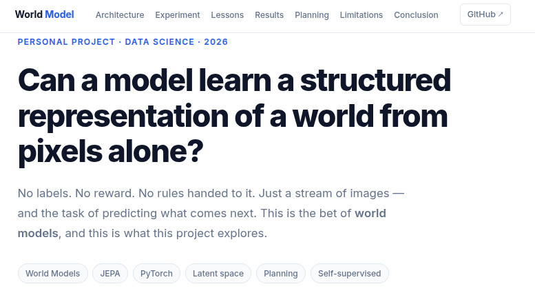
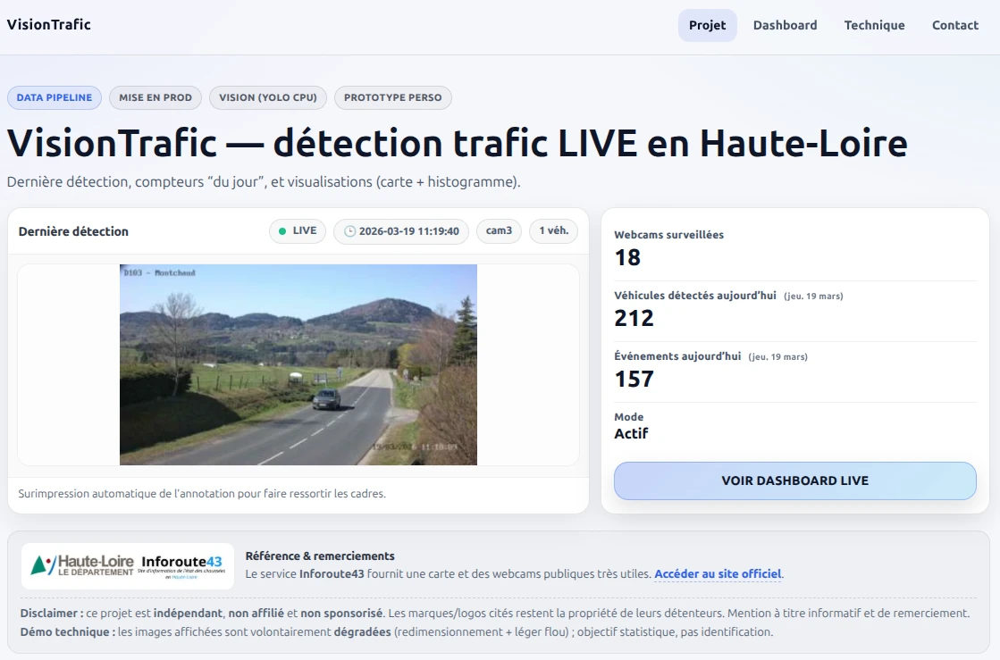
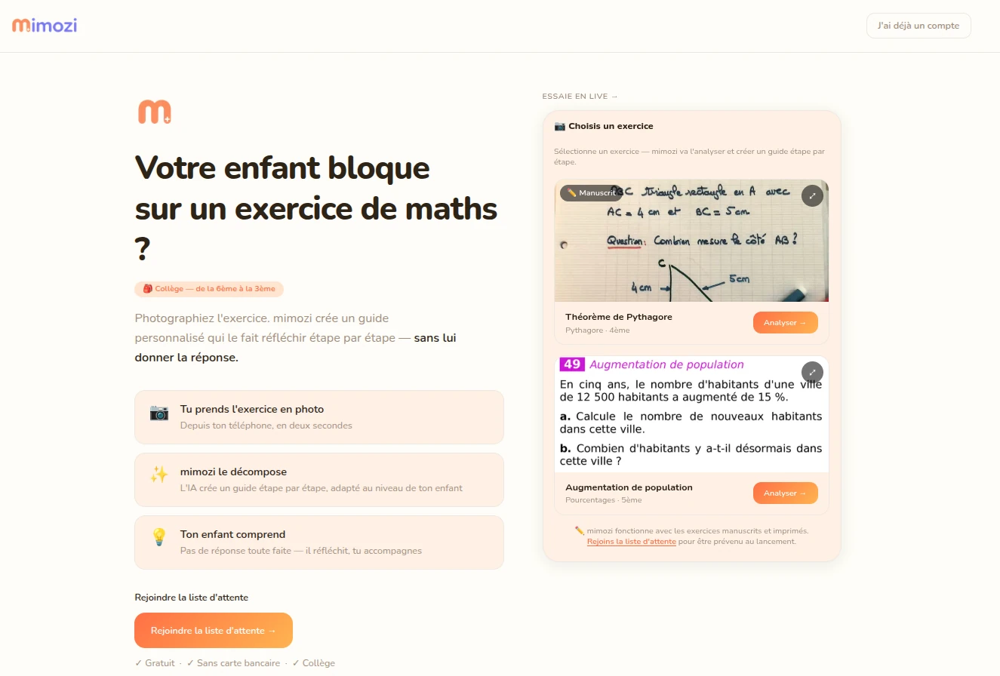

Je transforme des besoins flous
en solutions concrètes.
Profil hybride à l'intersection de la technique et du métier. Je sais écouter un besoin, concevoir une solution data ou IA, et l'expliquer à ceux qui vont l'utiliser.

Parcours professionnel
Développement indépendant & recherche
Projets personnels · Veille & apprentissage
Nov. 2025 — Actuel
- Recherche personnelle sur les architectures d'IA modernes : world models, représentation latente et planification sans supervision
- Développement et déploiement de projets full-stack : SaaS IA (mimozi), pipeline computer vision temps réel (VisionTrafic)
- Veille technologique continue : LLMs, architectures Transformer, MLOps, outils IA open-source
Pandata
Data Analyst & R&D IA Locale
Nov 2024 — Oct 2025
- Mission analytique (Sanofi) : analyse structurelle d'un data model d'obsolescence matériel/logiciel du parc informatique, visualisations Power BI
- R&D IA locale : conception et déploiement de 5 à 6 chatbots RAG spécialisés (Ollama, GPU local), dont un assistant bénévoles pour un festival de musique
- Benchmarking de modèles LLM, monitoring des ressources, déploiement d'OpenWebUI
- Veille technologique intensive sur les LLMs locaux et les architectures RAG
Mairie de Saint-Julien-Chapteuil
Conseiller Numérique / Chef de projet digital
2021 — 2023
- Déploiement d'outils numériques (GED, Nextcloud, wiki, prise de RDV)
- Analyse des besoins métiers et coordination de prestataires
- Support utilisateurs multi-niveaux et conduite du changement
Éducation Nationale
Professeur de mathématiques
2016 — 2020
- Enseignement du collège à la terminale
- Création de supports pédagogiques numériques
- Vulgarisation de concepts complexes
Cours particuliers de mathématiques
Indépendant · Le Puy-en-Velay
2010 — 2024
Accompagnement individualisé d'élèves, conception de parcours personnalisés et suivi des progrès. Activité menée en parallèle de mon parcours professionnel.
Expériences antérieures
Projets déployés
Solutions en production, accessibles en ligne.

World Model JEPA
Exploration personnelle des architectures JEPA : un Vision Transformer + prédicteur entraîné sans labels sur un environnement simulé. Résultats : émergence spontanée d'une structure spatiale (R² = 1.0) et planification de trajectoires dans l'espace latent (100 % de réussite sur les tests).

VisionTrafic
Pipeline temps réel de détection d'objets à partir de webcams publiques. Ingestion par cron, traitement YOLO, stockage structuré, API REST Flask et dashboard live — déployé sur VPS Linux.

mimozi
Application IA mobile-first pour accompagner les parents dans la résolution d'exercices de maths. Photo de l'exercice → guide pédagogique IA. Gestion de comptes, profils enfants, historique et quota d'usage.
Projets de formation
Master Expert en Data Science — OpenClassrooms / CentraleSupélec
10 projets couvrant l'ensemble du cycle data : EDA, pipelines, ML supervisé/non supervisé, deep learning, scoring crédit, MLOps, Big Data (PySpark / AWS EMR).
Compétences techniques
Un ensemble d'outils maîtrisés pour concevoir des solutions data robustes, de l'ingestion à la visualisation.
Langages
- Python
- SQL
Data & ML
- Pandas / NumPy
- Scikit-learn
- TensorFlow / Keras
Big Data
- PySpark
- AWS EMR / S3
DevOps & MLOps
- Git / CI-CD
- MLflow
- Flask API
Infra
- Linux / VPS
- Déploiement web
BI & Reporting
- Power BI
- Dataviz Python
- Streamlit
Formation
Master Expert en Data Science
OpenClassrooms / CentraleSupélec
Certification Python
MITx — edX
Licence Marketing
FEDE
Licence Ingénierie de la Construction
INSA Toulouse
Travaillons ensemble.
Ouvert aux opportunités en data engineering, data analyse, et aux projets qui ont un impact concret.
alexandre.rogues@gmail.com